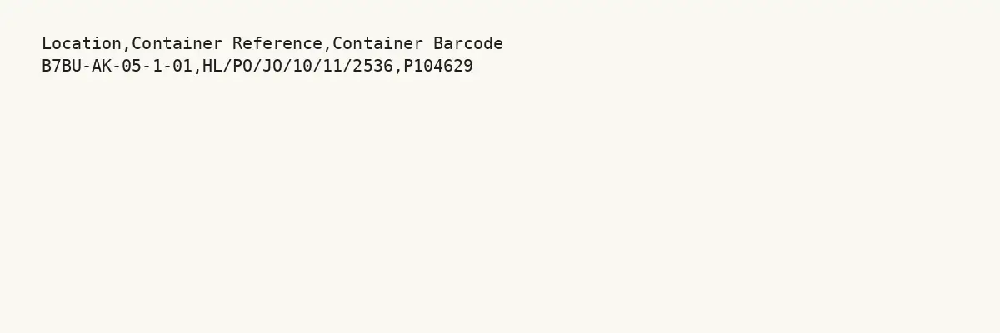

GHF-E106-R15-A3 partial
CAS-347296 item 03: Collection 27 series 11 manifest

Transcript
Location,Container Reference,Container Barcode B7BU-AK-05-1-01,HL/PO/JO/10/11/2536,P104629
Artifact description
Provides catalogue results and some court case records, states most material is not expected to be held, and offers paid research for further searches.
| Catalogue ID | GHF-E106-R15-A3 |
|---|---|
| What it is | Document from The National Archives. Attached to an email received on 23 September 2026, their reference CAS-347296-M0V4Y1 CRM:007302479. 1 page. |
| From | The National Archives |
| Email received | 23 September 2026 |
| Their reference | CAS-347296-M0V4Y1 CRM:007302479 |
| Pages | 1 |
| File | Item 03 - Collect 27 Series 11_Manifest_Redacted.csv (0 KB) |
| State | Read |
Our integration
Part of the FOI thread with The National Archives opened 20 August 2026. The thread's standing classification is “partial”.
Concern to test: whether this reply answers the question as asked, or a narrower one. Not checked against the original request wording here.
Related: GHF-E106-R15-A1 — CAS-347296 item 01: release schedule (on Discovery) · GHF-E106-R15-A2 — CAS-347296 item 02: high-level delivery schedule · The covering email · Timeline · Disclosure Dartboard